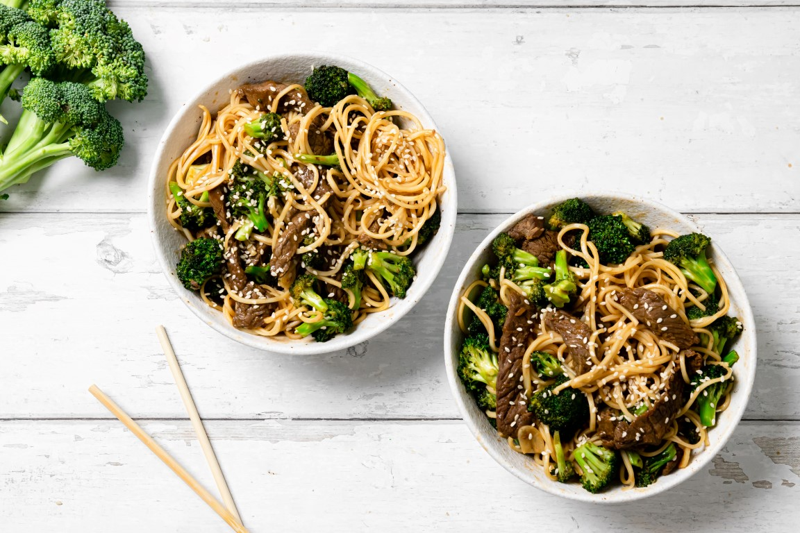

מוקפץ בקר עם נודלס וברוקולי
תוך חצי שעה אתם מגישים ארוחת ערב אסייתית מושלמת: נודלס עם רצועות בקר וברוקולי מוקפצים ברוטב עוצמתי וטעים 🥢🥦

⏱ זמן הכנה: 10 דקות (כולל בישול: 30 דקות)
🔥 רמת קושי: בסיסי
🍽️ קלוריות: 720
✅ כשר
מצרכים (3 מנות)
- 1 בקבוק רוטב אסייתי למוקפץ
- 500 גרם שייטל בקר פרוס לרצועות דקות
- 2 ראשי ברוקולי
- 1 ראש שום (קצוץ)
- 1 כף שורש ג’ינג’ר מגורד
- 220 גרם אטריות ביצים
- 4 כפות שמן קנולה
אופן ההכנה
- חותכים את הבקר לרצועות ומשרים בקערה עם רוטב אסייתי.
- מבשלים את האטריות לפי ההוראות, מסננים ושומרים בצד.
- בווק עם מעט שמן, צורבים את הבשר כדקה-שתיים, ומוציאים לצלחת.
- מפרידים את הברוקולי לפרחים, חולטים 5 דקות במים רותחים ומסננים.
- מטגנים את השום עד הזהבה, מוסיפים ג’ינג’ר וברוקולי ומקפיצים כ-4 דקות.
- מחזירים את הבשר והנודלס לווק, מוסיפים רוטב לפי הטעם ומערבבים היטב.
- מבשלים עוד 3–5 דקות עד שהכול מצופה ועסיסי. מגישים חם.